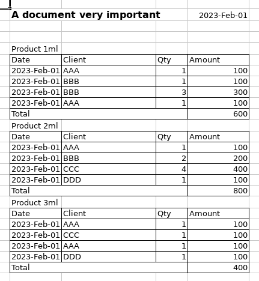

Tutorial 2 - Data extraction with a complex semi-structured layout
This tutorial will demonstrate how to use Any2Json to extract data from one Excel spreadsheet. To demonstrate the usage of this framework, we will load a document with a somewhat complex layout, as seen here:

Setup PyAny2Json
Before to use the package, you need to download the jars in your project. Run the following command line at the root of your python project:
python pyany2json/setup.py
Import the package:
import pyany2json
Minimal code
The minimal code to load a document is as follow:
with pyany2json.load(file_path, encoding="UTF-8") as doc:
for sheet in doc.sheets():
table = sheet.getTable()
if table.isPresent():
table = table.get()
doSomethingWithHeaders(table.headers())
doSomethingWithRows(table.rows())
The encoding ("UTF-8" here) is used if the encoding could not be detected when loading the document.
Load base model
To parse a document, any2Json needs a model that will contains the parameters required to the parsing. Instead to start from an empty Model (See Tutorial 10), we will start from an existing one and we will adapt it for our document. You can find a list and details of all models here.
The base model, we will use, is "sales-english" that has been trained on 200+ english documents containing distributor data and with a large range of different layouts.
The base model already recognize some entities such as DATE and NUMBER. We will setup the model to add one new entity PRODUCTNAME and we will configure a layex to extract the different elements of the documents. You can find more details about layex.
REPO_BASE_URL = "https://raw.githubusercontent.com/RomualdRousseau/Any2Json-Models/main"
MODEL_NAME = "sales-english"
FILE_PATH = "data/document with multiple tables.xlsx"
FILE_ENCODING = "UTF-8"
builder = pyany2json.model_from_uri(f"{REPO_BASE_URL}/{MODEL_NAME}/{MODEL_NAME}.json")
entities = [v for v in builder.getEntityList() if v != "PACKAGE"]
entities.append("PRODUCTNAME")
patterns = {k: v for (k, v) in builder.getPatternMap().items() if v != "PACKAGE"}
patterns["\\D+\\dml"] = "PRODUCTNAME"
parser = pyany2json.LayexTableParser(
["(v.$)+"], ["(()(S+$))(()([/^TOTAL/|v].+$)())+(/TOTAL/.+$)"]
)
model = (
builder.setEntityList(entities)
.setPatternMap(patterns)
.setTableParser(parser)
.build()
)
Load the document
We load the document by creating a document instance with the model and options to parse the document. The hint "pyany2json.INTELLI_LAYOUT" will tell the document instance that the document has a complex layout. The recipe "sheet.setCapillarityThreshold(0)" will tell the parser engine to extract the features as small as possible. And finally we want the tag case to be in snake case notation:
with pyany2json.load(
FILE_PATH,
encoding=FILE_ENCODING,
model=model,
hints=[pyany2json.INTELLI_LAYOUT],
recipe=["sheet.setCapillarityThreshold(0)"],
tag_case="SNAKE"
) as doc:
...
Output the tabular result
Finally, we iterate over the sheets, rows and cells and outpout the data on the console:
for sheet in doc.sheets():
table = sheet.getTable()
if table.isPresent():
table = table.get()
for header in table.headers():
print(header.getTag().getValue(), end=" ")
print()
for row in table.rows():
for cell in row.cells():
print(cell.getValue(), end=" ")
print()
a_document_very_important date product_name invoice_date client quantity amount
A document very important 2023-02-01 Product 1ml 2023-02-01 AAA 1 100
A document very important 2023-02-01 Product 1ml 2023-02-01 BBB 1 100
A document very important 2023-02-01 Product 1ml 2023-02-01 BBB 3 300
A document very important 2023-02-01 Product 1ml 2023-02-01 AAA 1 100
A document very important 2023-02-01 Product 2ml 2023-02-01 AAA 1 100
A document very important 2023-02-01 Product 2ml 2023-02-01 BBB 2 200
A document very important 2023-02-01 Product 2ml 2023-02-01 CCC 4 400
A document very important 2023-02-01 Product 2ml 2023-02-01 DDD 1 100
A document very important 2023-02-01 Product 3ml 2023-02-01 AAA 1 100
A document very important 2023-02-01 Product 3ml 2023-02-01 CCC 1 100
A document very important 2023-02-01 Product 3ml 2023-02-01 AAA 1 100
A document very important 2023-02-01 Product 3ml 2023-02-01 DDD 1 100
On this output, we print out the graph of the document built during the parsing and we can see clearly the relation between the elements of the spreadsheet and how there are structured in tabular form.
Conclusion
Congratulations! You have loaded documents using Any2Json.
For more examples of using Any2Json, check out the tutorials.